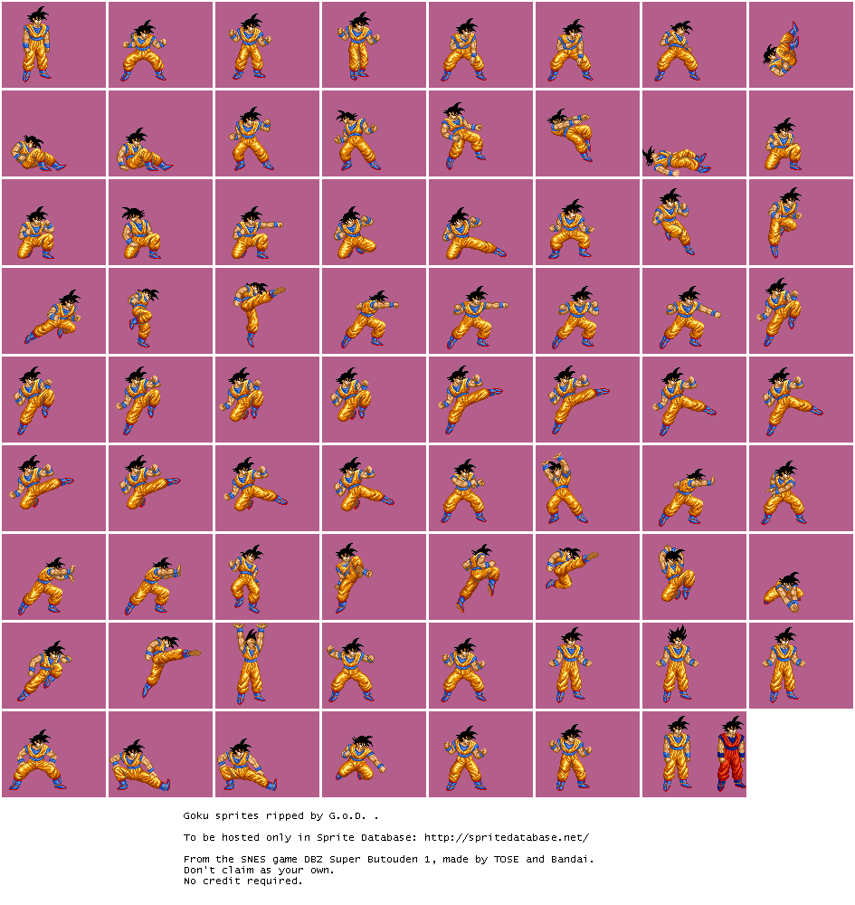
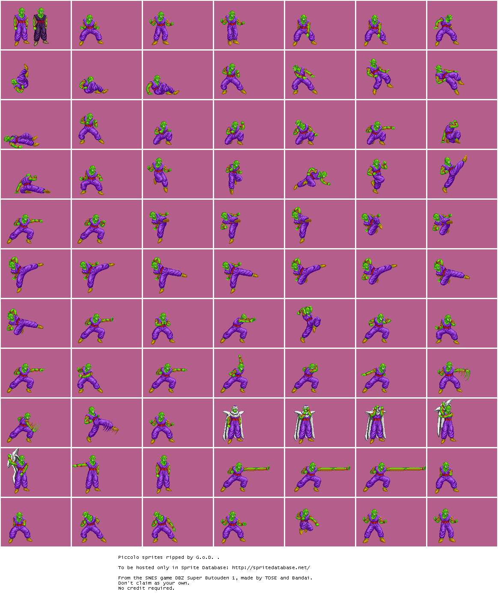
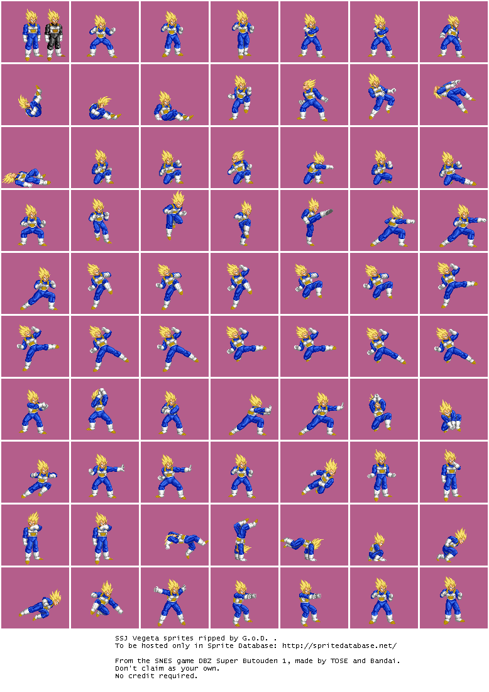
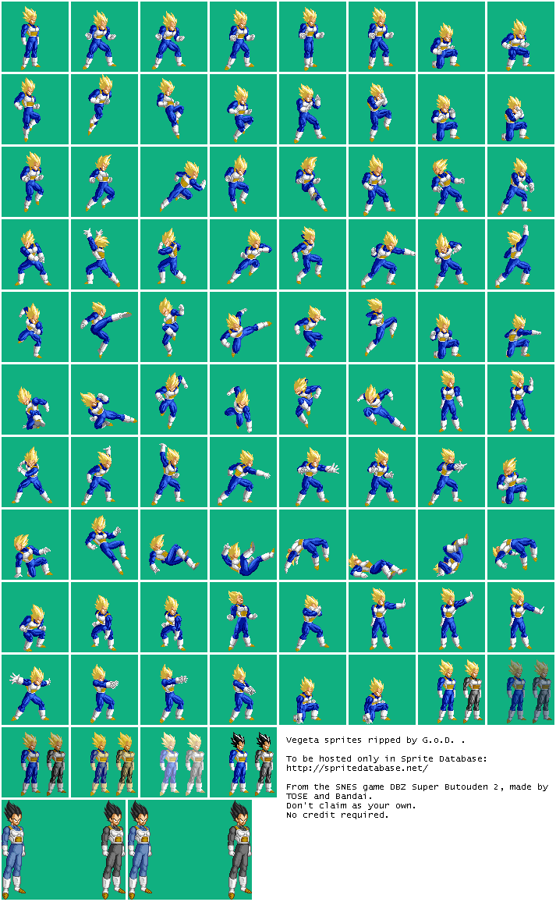
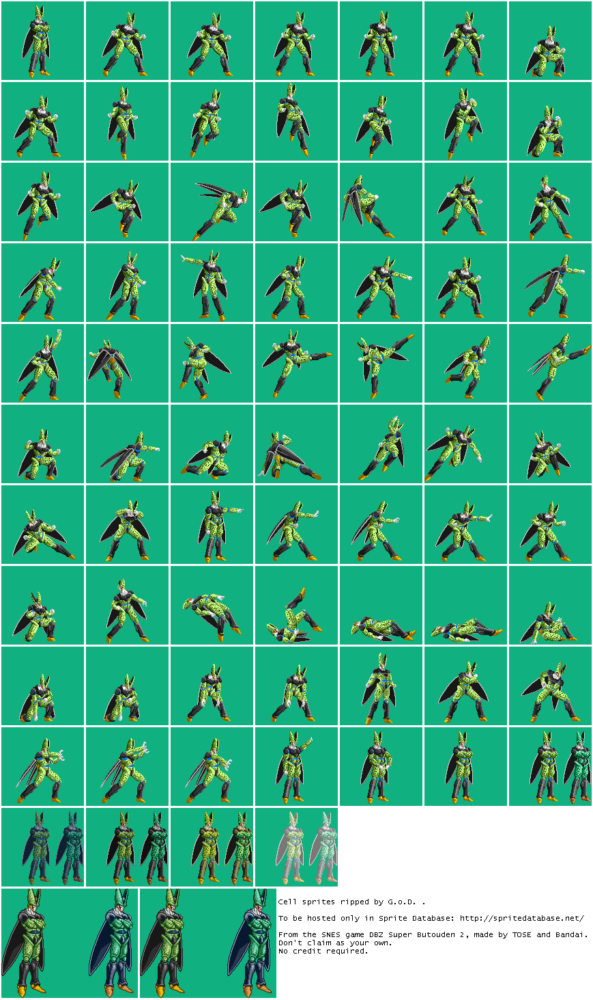

Dragon Ball Z: Super Butōden Series
1993–1994年 SNES 格鬥傳奇，七龍珠遊戲歷史的開篇之作
🎮 超武鬥傳（Super Butōden） 是七龍珠遊戲史上的里程碑——Tose 開發、Bandai 發行的3部 SNES 格鬥遊戲，共推出13個可操作角色、涵蓋全DBZ故事線、累計銷售超過 330 萬套。首次在遊戲中加入角色配音，以動感的 16-bit 格鬥體驗重現原作戰鬥的快感。
開發商： Tose
發行商： Bandai
平台： SNES (Super Famicom)
發售地區： 日本 1993.3.20 / 歐洲 1993.11.30 / 北美 2018.9.28*
製作人： Toshihiro Suzuki
導演： Akihumi Kubota, Shinsaku Shimada
作曲： Kenji Yamamoto
• 七龍珠首款全面3D格鬥遊戲
• 6鍵可自訂控制系統
• 分割螢幕對戰（保留雙方視野）
• 首次遊戲內角色配音

孫悟空
比克
超貝吉塔開發商： Tose
發行商： Bandai
平台： SNES (Super Famicom)
發售地區： 日本 1993.12.17 / 歐洲 1994.6 / 北美 2015.10.20*
製作人： Toshihiro Suzuki
導演： Shinsaku Shimada
作曲： Kenji Yamamoto, Akihito Suita, Yuki Sabakuma
• Cell篇後的新劇情
• 流星連段系統
• 水面竞技場
• 氣值充填系統升級

貝吉塔
賽魯日本版中悟空為隱藏角色（需密技解鎖），是系列中唯一的設定。遊戲融合劇場版《布羅利 傳說中的超級戰士》和《波傑克 不敗戰士》的角色與故事要素。
開發商： Tose (15人團隊，歷時6個月開發)
發行商： Bandai
平台： SNES (Super Famicom)
發售地區： 日本 1994.9.29 / 歐洲 1995.1.25 (限法義西)
製作人： Toshihiro Suzuki / 助理：Takeo Isogai
作曲： Kenji Yamamoto, Akihito Suita, Shinji Amagishi
官方攻略本： Shueisha 1994.11.7 發行
• 布歐篇故事背景
• 超大型角色精靈（Dabura/魔人布歐）
• VS模式 + Tournament tournament
評論評分： 70–91分 (普遍正面)
主要讚譽： 視覺、動畫、音樂、操控性
主要批評： 缺少故事模式
超武鬥傳 I 和 II 在同一年 (1993年) 推出，足足相隔 9 個月。第一部於3月發售、三個月內售出 130 萬套後，Tose 立即啟動第二部開發，於12月上市。第三部則於次年推出，完成「1993–1994 三年內三部大作」的壯舉。
超武鬥傳 II 的水面競技場由 Toei Animation（東映動畫）特別委製，展示了當時日本遊戲製作與動畫界的緊密合作。
• 首週銷售：超武鬥傳 I 創下日本 SNES 遊戲歷史首週銷售紀錄
• 年度排名：Part I 和 II 分別於 1993 年 3 月與 12 月登頂 Famitsu 月度銷售排行
• 累計銷售：三部作品合計超 330 萬套全球銷售，在七龍珠遊戲史上名列前茅
🔒 隱藏角色解鎖密技：
• 超武鬥傳 I： 開場悟空對比克戰鬥時，按 L+R+Select+Start 解鎖隱藏角色
• 超武鬥傳 II： 悟空（日本版隱藏）、布羅利 — 需使用密技代碼於角色選擇畫面
• 超武鬥傳 III： 超級未來特蘭克斯 — 開場時按「向上 X 向下 B L Y R A」
🎪 特色彩蛋與機制：
• IF世界線： 超武鬥傳 I 獨特設計——玩家即使全敗，故事仍推進，呈現「全敗結局」（貝吉塔篇特別精彩）
• 雙角色對戰： 特定密技可讓雙方各選同一角色（例如悟空 vs 悟空），角色會說出招式名稱
• 特殊音效： 當同一角色對戰時，使用龜派氣功會說「Kamehame-ha」，使用元氣彈會說「Spirit Bomb」
• 隱藏劇情分支： 超武鬥傳 II 擁有多條不同的結局路線，取決於戰鬥過程中的選擇
• CPU控制密技： 在對戰模式中暫停，按 A + B + X + Y，恢復後 CPU 接管遊戲控制
| 項目 | 第 I 代 | 第 II 代 | 第 III 代 |
|---|---|---|---|
| 發售日期 | 1993.3.20 | 1993.12.17 | 1994.9.29 |
| 可玩角色數 | 10 (+1隱藏) | 8 (+2隱藏) | 9 (+1隱藏) |
| 故事模式 | ✓ Cell篇 | ✓ Cell後 | ✗ (VS/Tournament) |
| 日本銷售量 | 130 萬 | 115 萬 | 91 萬 |
| 特色系統 | 分割螢幕/配音 | 流星連段/水面 | 超大型角色 |
| 評論評分 | 大多正面 | 92–93/100 | 70–91分 |
💡 常見問題：
Q: 為什麼只有日本版發售？ 歐美地區當時尚未普遍接觸七龍珠動畫，直到2018年才通過FighterZ特典發行北美版。
Q: 超武鬥傳與後來的Budokai系列有何不同？ 超武鬥傳為SNES獨佔、採用分割螢幕設計；Budokai系列(2002年起)為PS2/GameCube，採用3D對戰場景，遊戲性更為現代化。
📚 參考資料與來源：
• Wikipedia - Dragon Ball Z: Super Butōden
• Wikipedia - Dragon Ball Z: Super Butōden 2
• Wikipedia - Dragon Ball Z: Super Butōden 3
• Famitsu 月度銷售排行檔案
• MobyGames, GameFAQs, TCRF (The Cutting Room Floor)
• YouTube 原創頻道與遊戲影片資料庫